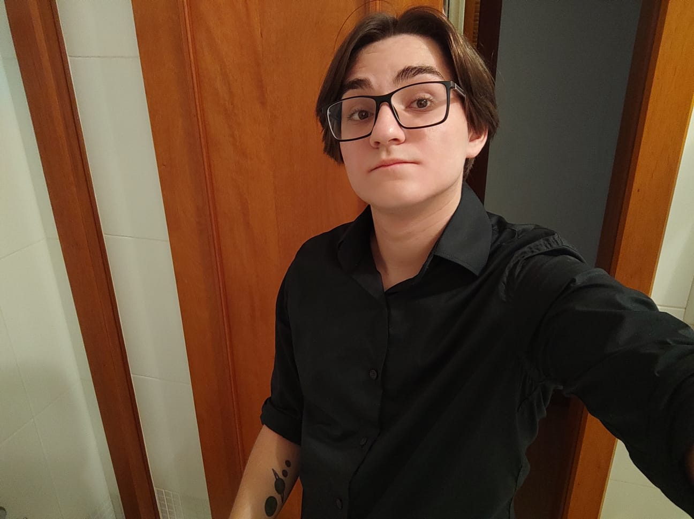

Dados Pessoais
Nome: Lucas Firmino dos Santos
E-mail: lucas.ftsc@egmail.com
Telefone: (48) 98432-7298
Experiência Profissional
Cargo: Editor de vídeo
Empresa: ESCOLA DAS LENDAS PORTAL DE CONTEÚDO DE JOGOS
Descrição: Utilização do Adobe Premier para edições de vídeos em formatos 16:9 e 9:16, para posterior postagem em redes sociais.
Formação Acadêmica
Curso: Análise e Desenvolvimento de Sistemas (ADS)
Instituição: Faculdade Municipal de Palhoça (FMP)
Ano de Conclusão: 2024